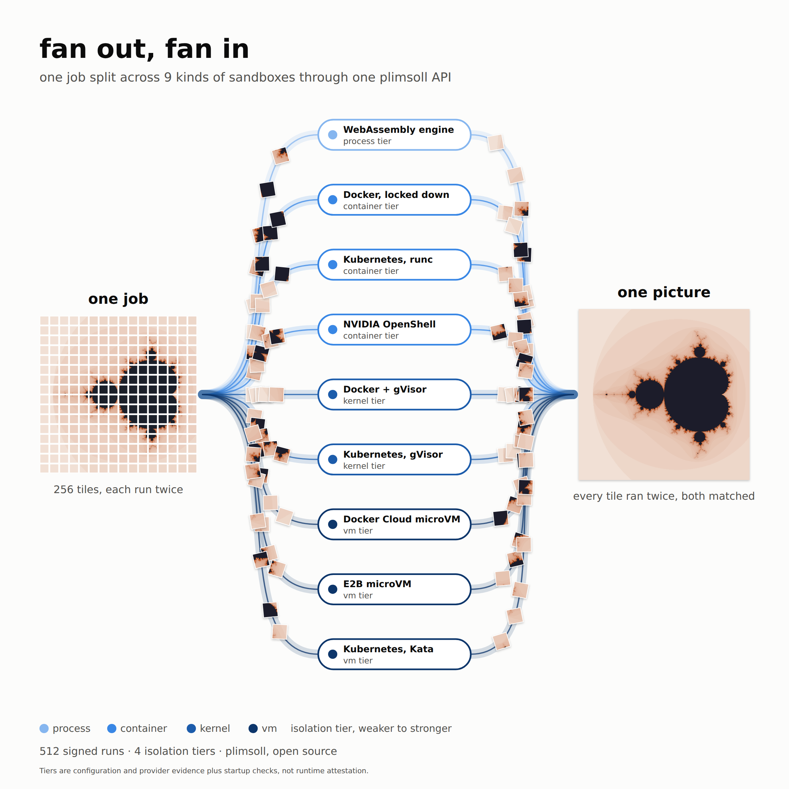
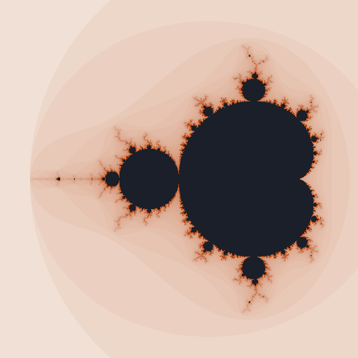

plimsoll home Same run, different sandboxes Lessons Source on GitHub ↗ One job, every sandbox
The Mandelbrot set is a mathematical picture whose intricate patterns reveal more detail as you zoom in. It is drawn by repeating a simple calculation at every pixel. We split the picture into 256 tiles and used fan-out to send the pieces across 9 kinds of sandboxes working at once. Each tile was computed twice, by two different kinds of sandboxes running the same JavaScript program. The two answers were compared byte for byte: 256 of 256 tiles agree. 57 of those pairs compared two different JavaScript engines, and 107 included a run in the cloud. Every run is signed into one bundle that anyone can check offline.

Signed runs
512
one fresh sandbox each
Kinds of sandbox
9
each its own daemon, one pool
Isolation tiers
4 of 4
process, container, kernel, vm
Tiles that agree
256 of 256
two sandboxes, same bytes
Wall time
1 min 57 s
start to last answer, operator's clock
Cloud cost
$0.0076
estimated: signed run time × list price
1. The finished picture

The picture, assembled from the tiles whose two answers agreed. 512 by 512 pixels. Colours show how many repetitions each pixel's calculation took.
2. Split into 256 tiles
The same picture with its 16 by 16 tile grid. Each square is one piece of work sent to two different kinds of sandboxes.
3. Where the work ran
tile 0,0; run 1: WebAssembly engine, 503 ms; run 2: Docker, locked down, 884 ms tile 1,0; run 1: Docker, locked down, 1047 ms; run 2: Docker with gVisor, 1122 ms tile 2,0; run 1: Docker with gVisor, 1043 ms; run 2: NVIDIA OpenShell, 1679 ms tile 3,0; run 1: Kubernetes agent-sandbox, runc, 236 ms; run 2: NVIDIA OpenShell, 1794 ms tile 4,0; run 1: Kubernetes agent-sandbox, runc, 235 ms; run 2: Kubernetes agent-sandbox, gVisor, 439 ms tile 5,0; run 1: Kubernetes agent-sandbox, gVisor, 356 ms; run 2: Kubernetes agent-sandbox, Kata Containers, 977 ms tile 6,0; run 1: E2B microVM, 1080 ms; run 2: Kubernetes agent-sandbox, Kata Containers, 1163 ms tile 7,0; run 1: E2B microVM, 1269 ms; run 2: Docker Cloud Sandboxes microVM, 6123 ms tile 8,0; run 1: WebAssembly engine, 515 ms; run 2: Docker Cloud Sandboxes microVM, 2442 ms tile 9,0; run 1: WebAssembly engine, 25 ms; run 2: Docker with gVisor, 1045 ms tile 10,0; run 1: Docker, locked down, 796 ms; run 2: NVIDIA OpenShell, 1567 ms tile 11,0; run 1: Docker with gVisor, 859 ms; run 2: Kubernetes agent-sandbox, runc, 223 ms tile 12,0; run 1: NVIDIA OpenShell, 1449 ms; run 2: Kubernetes agent-sandbox, gVisor, 289 ms tile 13,0; run 1: Kubernetes agent-sandbox, runc, 173 ms; run 2: Kubernetes agent-sandbox, Kata Containers, 2238 ms tile 14,0; run 1: E2B microVM, 984 ms; run 2: Kubernetes agent-sandbox, gVisor, 265 ms tile 15,0; run 1: Docker Cloud Sandboxes microVM, 2239 ms; run 2: Kubernetes agent-sandbox, Kata Containers, 1720 ms tile 0,1; run 1: WebAssembly engine, 23 ms; run 2: E2B microVM, 1302 ms tile 1,1; run 1: Docker, locked down, 627 ms; run 2: Docker Cloud Sandboxes microVM, 4405 ms tile 2,1; run 1: WebAssembly engine, 21 ms; run 2: NVIDIA OpenShell, 1809 ms tile 3,1; run 1: Kubernetes agent-sandbox, runc, 1118 ms; run 2: Docker, locked down, 666 ms tile 4,1; run 1: Docker with gVisor, 843 ms; run 2: Kubernetes agent-sandbox, gVisor, 9900 ms tile 5,1; run 1: NVIDIA OpenShell, 1686 ms; run 2: Kubernetes agent-sandbox, Kata Containers, 7003 ms tile 6,1; run 1: E2B microVM, 1179 ms; run 2: Kubernetes agent-sandbox, runc, 117 ms tile 7,1; run 1: Docker Cloud Sandboxes microVM, 4016 ms; run 2: Kubernetes agent-sandbox, gVisor, 4127 ms tile 8,1; run 1: WebAssembly engine, 455 ms; run 2: Kubernetes agent-sandbox, Kata Containers, 1727 ms tile 9,1; run 1: E2B microVM, 1286 ms; run 2: Docker, locked down, 611 ms tile 10,1; run 1: Docker with gVisor, 873 ms; run 2: Docker Cloud Sandboxes microVM, 4147 ms tile 11,1; run 1: WebAssembly engine, 20 ms; run 2: Kubernetes agent-sandbox, runc, 4919 ms tile 12,1; run 1: Docker, locked down, 748 ms; run 2: Kubernetes agent-sandbox, gVisor, 1266 ms tile 13,1; run 1: Docker with gVisor, 1046 ms; run 2: Kubernetes agent-sandbox, Kata Containers, 28245 ms tile 14,1; run 1: E2B microVM, 1249 ms; run 2: NVIDIA OpenShell, 1621 ms tile 15,1; run 1: Kubernetes agent-sandbox, runc, 4034 ms; run 2: Docker Cloud Sandboxes microVM, 2414 ms tile 0,2; run 1: WebAssembly engine, 464 ms; run 2: Kubernetes agent-sandbox, gVisor, 3992 ms tile 1,2; run 1: Docker, locked down, 716 ms; run 2: Kubernetes agent-sandbox, Kata Containers, 27204 ms tile 2,2; run 1: E2B microVM, 1522 ms; run 2: Docker with gVisor, 873 ms tile 3,2; run 1: NVIDIA OpenShell, 1718 ms; run 2: Docker Cloud Sandboxes microVM, 3415 ms tile 4,2; run 1: WebAssembly engine, 498 ms; run 2: Kubernetes agent-sandbox, gVisor, 1281 ms tile 5,2; run 1: Docker, locked down, 956 ms; run 2: Kubernetes agent-sandbox, Kata Containers, 1860 ms tile 6,2; run 1: E2B microVM, 1041 ms; run 2: Docker with gVisor, 720 ms tile 7,2; run 1: NVIDIA OpenShell, 1665 ms; run 2: Docker Cloud Sandboxes microVM, 3613 ms tile 8,2; run 1: WebAssembly engine, 459 ms; run 2: Kubernetes agent-sandbox, runc, 3054 ms tile 9,2; run 1: Docker, locked down, 738 ms; run 2: Kubernetes agent-sandbox, gVisor, 253 ms tile 10,2; run 1: Docker with gVisor, 892 ms; run 2: Kubernetes agent-sandbox, Kata Containers, 990 ms tile 11,2; run 1: E2B microVM, 1716 ms; run 2: NVIDIA OpenShell, 1402 ms tile 12,2; run 1: Kubernetes agent-sandbox, runc, 2956 ms; run 2: Docker Cloud Sandboxes microVM, 3573 ms tile 13,2; run 1: WebAssembly engine, 424 ms; run 2: Kubernetes agent-sandbox, Kata Containers, 1021 ms tile 14,2; run 1: Docker, locked down, 652 ms; run 2: E2B microVM, 1092 ms tile 15,2; run 1: Docker with gVisor, 689 ms; run 2: Docker Cloud Sandboxes microVM, 3383 ms tile 0,3; run 1: WebAssembly engine, 461 ms; run 2: NVIDIA OpenShell, 1460 ms tile 1,3; run 1: Docker, locked down, 712 ms; run 2: Kubernetes agent-sandbox, runc, 208 ms tile 2,3; run 1: Docker with gVisor, 749 ms; run 2: Kubernetes agent-sandbox, gVisor, 284 ms tile 3,3; run 1: NVIDIA OpenShell, 1527 ms; run 2: Kubernetes agent-sandbox, Kata Containers, 1992 ms tile 4,3; run 1: E2B microVM, 1058 ms; run 2: Kubernetes agent-sandbox, runc, 122 ms tile 5,3; run 1: Kubernetes agent-sandbox, gVisor, 674 ms; run 2: Docker Cloud Sandboxes microVM, 3259 ms tile 6,3; run 1: WebAssembly engine, 453 ms; run 2: E2B microVM, 1396 ms tile 7,3; run 1: Docker, locked down, 566 ms; run 2: Docker Cloud Sandboxes microVM, 3138 ms tile 8,3; run 1: WebAssembly engine, 506 ms; run 2: Docker with gVisor, 753 ms tile 9,3; run 1: Docker, locked down, 514 ms; run 2: NVIDIA OpenShell, 1267 ms tile 10,3; run 1: Docker with gVisor, 790 ms; run 2: Kubernetes agent-sandbox, runc, 181 ms tile 11,3; run 1: NVIDIA OpenShell, 1260 ms; run 2: Kubernetes agent-sandbox, gVisor, 281 ms tile 12,3; run 1: Kubernetes agent-sandbox, runc, 3305 ms; run 2: Kubernetes agent-sandbox, Kata Containers, 1061 ms tile 13,3; run 1: E2B microVM, 904 ms; run 2: Kubernetes agent-sandbox, gVisor, 887 ms tile 14,3; run 1: Docker Cloud Sandboxes microVM, 2251 ms; run 2: Kubernetes agent-sandbox, Kata Containers, 1052 ms tile 15,3; run 1: WebAssembly engine, 419 ms; run 2: Docker Cloud Sandboxes microVM, 3275 ms tile 0,4; run 1: WebAssembly engine, 434 ms; run 2: Docker, locked down, 494 ms tile 1,4; run 1: Docker, locked down, 544 ms; run 2: Docker with gVisor, 726 ms tile 2,4; run 1: Docker with gVisor, 824 ms; run 2: NVIDIA OpenShell, 1049 ms tile 3,4; run 1: NVIDIA OpenShell, 918 ms; run 2: Kubernetes agent-sandbox, runc, 101 ms tile 4,4; run 1: Kubernetes agent-sandbox, gVisor, 996 ms; run 2: Kubernetes agent-sandbox, runc, 3744 ms tile 5,4; run 1: Kubernetes agent-sandbox, gVisor, 339 ms; run 2: Kubernetes agent-sandbox, Kata Containers, 6047 ms tile 6,4; run 1: E2B microVM, 1296 ms; run 2: Kubernetes agent-sandbox, Kata Containers, 863 ms tile 7,4; run 1: E2B microVM, 1486 ms; run 2: Docker Cloud Sandboxes microVM, 3220 ms tile 8,4; run 1: WebAssembly engine, 456 ms; run 2: Docker, locked down, 551 ms tile 9,4; run 1: Docker, locked down, 823 ms; run 2: Docker with gVisor, 982 ms tile 10,4; run 1: Docker with gVisor, 731 ms; run 2: NVIDIA OpenShell, 876 ms tile 11,4; run 1: NVIDIA OpenShell, 883 ms; run 2: Kubernetes agent-sandbox, runc, 140 ms tile 12,4; run 1: Kubernetes agent-sandbox, runc, 955 ms; run 2: Kubernetes agent-sandbox, gVisor, 1834 ms tile 13,4; run 1: Kubernetes agent-sandbox, gVisor, 246 ms; run 2: Kubernetes agent-sandbox, Kata Containers, 2428 ms tile 14,4; run 1: E2B microVM, 1551 ms; run 2: Kubernetes agent-sandbox, Kata Containers, 1612 ms tile 15,4; run 1: E2B microVM, 1165 ms; run 2: Docker Cloud Sandboxes microVM, 3305 ms tile 0,5; run 1: WebAssembly engine, 451 ms; run 2: Docker Cloud Sandboxes microVM, 3531 ms tile 1,5; run 1: WebAssembly engine, 463 ms; run 2: Docker with gVisor, 826 ms tile 2,5; run 1: Docker, locked down, 525 ms; run 2: NVIDIA OpenShell, 1099 ms tile 3,5; run 1: Docker with gVisor, 716 ms; run 2: Kubernetes agent-sandbox, runc, 3148 ms tile 4,5; run 1: NVIDIA OpenShell, 876 ms; run 2: Kubernetes agent-sandbox, gVisor, 1163 ms tile 5,5; run 1: Kubernetes agent-sandbox, runc, 125 ms; run 2: Kubernetes agent-sandbox, Kata Containers, 1994 ms tile 6,5; run 1: E2B microVM, 2841 ms; run 2: Kubernetes agent-sandbox, gVisor, 1698 ms tile 7,5; run 1: Docker Cloud Sandboxes microVM, 3457 ms; run 2: Kubernetes agent-sandbox, Kata Containers, 2004 ms tile 8,5; run 1: WebAssembly engine, 505 ms; run 2: E2B microVM, 1215 ms tile 9,5; run 1: Docker, locked down, 540 ms; run 2: Docker Cloud Sandboxes microVM, 4293 ms tile 10,5; run 1: WebAssembly engine, 441 ms; run 2: NVIDIA OpenShell, 943 ms tile 11,5; run 1: Docker, locked down, 639 ms; run 2: Kubernetes agent-sandbox, runc, 116 ms tile 12,5; run 1: Docker with gVisor, 704 ms; run 2: Kubernetes agent-sandbox, gVisor, 255 ms tile 13,5; run 1: NVIDIA OpenShell, 1039 ms; run 2: Kubernetes agent-sandbox, Kata Containers, 2077 ms tile 14,5; run 1: E2B microVM, 1043 ms; run 2: Kubernetes agent-sandbox, runc, 553 ms tile 15,5; run 1: Docker Cloud Sandboxes microVM, 3282 ms; run 2: Kubernetes agent-sandbox, gVisor, 3114 ms tile 0,6; run 1: WebAssembly engine, 18 ms; run 2: Kubernetes agent-sandbox, Kata Containers, 2016 ms tile 1,6; run 1: Docker, locked down, 635 ms; run 2: E2B microVM, 1346 ms tile 2,6; run 1: Docker with gVisor, 768 ms; run 2: Docker Cloud Sandboxes microVM, 3290 ms tile 3,6; run 1: WebAssembly engine, 450 ms; run 2: Kubernetes agent-sandbox, runc, 1162 ms tile 4,6; run 1: Docker, locked down, 598 ms; run 2: Kubernetes agent-sandbox, gVisor, 348 ms tile 5,6; run 1: Docker with gVisor, 1040 ms; run 2: Kubernetes agent-sandbox, Kata Containers, 1004 ms tile 6,6; run 1: E2B microVM, 1215 ms; run 2: NVIDIA OpenShell, 934 ms tile 7,6; run 1: Kubernetes agent-sandbox, runc, 196 ms; run 2: Docker Cloud Sandboxes microVM, 3523 ms tile 8,6; run 1: WebAssembly engine, 745 ms; run 2: Kubernetes agent-sandbox, gVisor, 2007 ms tile 9,6; run 1: Docker, locked down, 723 ms; run 2: Kubernetes agent-sandbox, Kata Containers, 6082 ms tile 10,6; run 1: E2B microVM, 1224 ms; run 2: Docker with gVisor, 707 ms tile 11,6; run 1: NVIDIA OpenShell, 1038 ms; run 2: Docker Cloud Sandboxes microVM, 2536 ms tile 12,6; run 1: WebAssembly engine, 843 ms; run 2: Kubernetes agent-sandbox, gVisor, 2444 ms tile 13,6; run 1: Docker, locked down, 701 ms; run 2: Kubernetes agent-sandbox, Kata Containers, 1097 ms tile 14,6; run 1: E2B microVM, 1659 ms; run 2: Docker with gVisor, 913 ms tile 15,6; run 1: NVIDIA OpenShell, 978 ms; run 2: Docker Cloud Sandboxes microVM, 3208 ms tile 0,7; run 1: WebAssembly engine, 418 ms; run 2: Kubernetes agent-sandbox, runc, 109 ms tile 1,7; run 1: Docker, locked down, 694 ms; run 2: Kubernetes agent-sandbox, gVisor, 219 ms tile 2,7; run 1: Docker with gVisor, 694 ms; run 2: Kubernetes agent-sandbox, Kata Containers, 855 ms tile 3,7; run 1: E2B microVM, 1452 ms; run 2: NVIDIA OpenShell, 1029 ms tile 4,7; run 1: Docker Cloud Sandboxes microVM, 3531 ms; run 2: Kubernetes agent-sandbox, runc, 335 ms tile 5,7; run 1: WebAssembly engine, 285 ms; run 2: Kubernetes agent-sandbox, Kata Containers, 2240 ms tile 6,7; run 1: E2B microVM, 1247 ms; run 2: Docker, locked down, 715 ms tile 7,7; run 1: Docker with gVisor, 860 ms; run 2: Docker Cloud Sandboxes microVM, 3365 ms tile 8,7; run 1: WebAssembly engine, 436 ms; run 2: NVIDIA OpenShell, 1240 ms tile 9,7; run 1: Docker, locked down, 587 ms; run 2: Kubernetes agent-sandbox, runc, 2510 ms tile 10,7; run 1: Docker with gVisor, 857 ms; run 2: Kubernetes agent-sandbox, gVisor, 718 ms tile 11,7; run 1: NVIDIA OpenShell, 1135 ms; run 2: Kubernetes agent-sandbox, Kata Containers, 2033 ms tile 12,7; run 1: E2B microVM, 1445 ms; run 2: Kubernetes agent-sandbox, runc, 832 ms tile 13,7; run 1: Docker Cloud Sandboxes microVM, 3223 ms; run 2: Kubernetes agent-sandbox, gVisor, 3539 ms tile 14,7; run 1: WebAssembly engine, 32 ms; run 2: E2B microVM, 960 ms tile 15,7; run 1: Docker, locked down, 567 ms; run 2: Docker Cloud Sandboxes microVM, 3229 ms tile 0,8; run 1: WebAssembly engine, 20 ms; run 2: Docker with gVisor, 853 ms tile 1,8; run 1: Docker, locked down, 496 ms; run 2: NVIDIA OpenShell, 1082 ms tile 2,8; run 1: Docker with gVisor, 652 ms; run 2: Kubernetes agent-sandbox, runc, 113 ms tile 3,8; run 1: NVIDIA OpenShell, 1091 ms; run 2: Kubernetes agent-sandbox, gVisor, 1467 ms tile 4,8; run 1: Kubernetes agent-sandbox, runc, 799 ms; run 2: Kubernetes agent-sandbox, Kata Containers, 943 ms tile 5,8; run 1: E2B microVM, 1468 ms; run 2: Kubernetes agent-sandbox, gVisor, 497 ms tile 6,8; run 1: Docker Cloud Sandboxes microVM, 3323 ms; run 2: Kubernetes agent-sandbox, Kata Containers, 6146 ms tile 7,8; run 1: WebAssembly engine, 394 ms; run 2: Docker Cloud Sandboxes microVM, 3431 ms tile 8,8; run 1: WebAssembly engine, 413 ms; run 2: Docker, locked down, 577 ms tile 9,8; run 1: Docker, locked down, 534 ms; run 2: Docker with gVisor, 913 ms tile 10,8; run 1: Docker with gVisor, 976 ms; run 2: NVIDIA OpenShell, 1140 ms tile 11,8; run 1: NVIDIA OpenShell, 1094 ms; run 2: Kubernetes agent-sandbox, runc, 1234 ms tile 12,8; run 1: Kubernetes agent-sandbox, gVisor, 500 ms; run 2: Kubernetes agent-sandbox, runc, 4093 ms tile 13,8; run 1: Kubernetes agent-sandbox, gVisor, 3224 ms; run 2: Kubernetes agent-sandbox, Kata Containers, 2022 ms tile 14,8; run 1: E2B microVM, 1066 ms; run 2: Kubernetes agent-sandbox, Kata Containers, 945 ms tile 15,8; run 1: E2B microVM, 1076 ms; run 2: Docker Cloud Sandboxes microVM, 3307 ms tile 0,9; run 1: WebAssembly engine, 19 ms; run 2: Docker, locked down, 664 ms tile 1,9; run 1: Docker, locked down, 495 ms; run 2: Docker with gVisor, 681 ms tile 2,9; run 1: Docker with gVisor, 699 ms; run 2: NVIDIA OpenShell, 1230 ms tile 3,9; run 1: NVIDIA OpenShell, 937 ms; run 2: Kubernetes agent-sandbox, runc, 299 ms tile 4,9; run 1: Kubernetes agent-sandbox, runc, 274 ms; run 2: Kubernetes agent-sandbox, gVisor, 3665 ms tile 5,9; run 1: Kubernetes agent-sandbox, gVisor, 1760 ms; run 2: Kubernetes agent-sandbox, Kata Containers, 985 ms tile 6,9; run 1: E2B microVM, 1175 ms; run 2: Kubernetes agent-sandbox, Kata Containers, 2001 ms tile 7,9; run 1: E2B microVM, 2579 ms; run 2: Docker Cloud Sandboxes microVM, 4777 ms tile 8,9; run 1: WebAssembly engine, 327 ms; run 2: Docker Cloud Sandboxes microVM, 2380 ms tile 9,9; run 1: WebAssembly engine, 437 ms; run 2: Docker with gVisor, 756 ms tile 10,9; run 1: Docker, locked down, 673 ms; run 2: NVIDIA OpenShell, 1194 ms tile 11,9; run 1: Docker with gVisor, 724 ms; run 2: Kubernetes agent-sandbox, runc, 137 ms tile 12,9; run 1: NVIDIA OpenShell, 898 ms; run 2: Kubernetes agent-sandbox, gVisor, 1019 ms tile 13,9; run 1: Kubernetes agent-sandbox, runc, 122 ms; run 2: Kubernetes agent-sandbox, Kata Containers, 3203 ms tile 14,9; run 1: E2B microVM, 1502 ms; run 2: Kubernetes agent-sandbox, gVisor, 784 ms tile 15,9; run 1: Docker Cloud Sandboxes microVM, 4322 ms; run 2: Kubernetes agent-sandbox, Kata Containers, 2008 ms tile 0,10; run 1: WebAssembly engine, 16 ms; run 2: E2B microVM, 1109 ms tile 1,10; run 1: Docker, locked down, 500 ms; run 2: Docker Cloud Sandboxes microVM, 4217 ms tile 2,10; run 1: WebAssembly engine, 21 ms; run 2: NVIDIA OpenShell, 1183 ms tile 3,10; run 1: Docker, locked down, 566 ms; run 2: Kubernetes agent-sandbox, runc, 1526 ms tile 4,10; run 1: Docker with gVisor, 784 ms; run 2: Kubernetes agent-sandbox, gVisor, 2630 ms tile 5,10; run 1: NVIDIA OpenShell, 1291 ms; run 2: Kubernetes agent-sandbox, Kata Containers, 941 ms tile 6,10; run 1: E2B microVM, 2503 ms; run 2: Kubernetes agent-sandbox, runc, 1142 ms tile 7,10; run 1: Docker Cloud Sandboxes microVM, 4358 ms; run 2: Kubernetes agent-sandbox, gVisor, 1995 ms tile 8,10; run 1: WebAssembly engine, 110 ms; run 2: Kubernetes agent-sandbox, Kata Containers, 2039 ms tile 9,10; run 1: Docker, locked down, 566 ms; run 2: E2B microVM, 2101 ms tile 10,10; run 1: Docker with gVisor, 623 ms; run 2: Docker Cloud Sandboxes microVM, 4316 ms tile 11,10; run 1: WebAssembly engine, 395 ms; run 2: Kubernetes agent-sandbox, runc, 966 ms tile 12,10; run 1: Docker, locked down, 630 ms; run 2: Kubernetes agent-sandbox, gVisor, 221 ms tile 13,10; run 1: Docker with gVisor, 680 ms; run 2: Kubernetes agent-sandbox, Kata Containers, 1980 ms tile 14,10; run 1: E2B microVM, 2547 ms; run 2: NVIDIA OpenShell, 2130 ms tile 15,10; run 1: Kubernetes agent-sandbox, runc, 1003 ms; run 2: Docker Cloud Sandboxes microVM, 3459 ms tile 0,11; run 1: WebAssembly engine, 17 ms; run 2: Kubernetes agent-sandbox, gVisor, 235 ms tile 1,11; run 1: Docker, locked down, 642 ms; run 2: Kubernetes agent-sandbox, Kata Containers, 1027 ms tile 2,11; run 1: Docker with gVisor, 590 ms; run 2: E2B microVM, 2383 ms tile 3,11; run 1: NVIDIA OpenShell, 1332 ms; run 2: Docker Cloud Sandboxes microVM, 2495 ms tile 4,11; run 1: WebAssembly engine, 26 ms; run 2: Kubernetes agent-sandbox, gVisor, 496 ms tile 5,11; run 1: Docker, locked down, 612 ms; run 2: Kubernetes agent-sandbox, Kata Containers, 379 ms tile 6,11; run 1: Docker with gVisor, 587 ms; run 2: E2B microVM, 1083 ms tile 7,11; run 1: NVIDIA OpenShell, 2172 ms; run 2: Docker Cloud Sandboxes microVM, 2058 ms tile 8,11; run 1: WebAssembly engine, 39 ms; run 2: Kubernetes agent-sandbox, runc, 2009 ms tile 9,11; run 1: Docker, locked down, 539 ms; run 2: Kubernetes agent-sandbox, gVisor, 214 ms tile 10,11; run 1: Docker with gVisor, 603 ms; run 2: Kubernetes agent-sandbox, Kata Containers, 6455 ms tile 11,11; run 1: E2B microVM, 1392 ms; run 2: NVIDIA OpenShell, 1796 ms tile 12,11; run 1: Docker Cloud Sandboxes microVM, 2156 ms; run 2: Kubernetes agent-sandbox, runc, 105 ms tile 13,11; run 1: WebAssembly engine, 50 ms; run 2: Kubernetes agent-sandbox, Kata Containers, 1763 ms tile 14,11; run 1: Docker, locked down, 577 ms; run 2: E2B microVM, 1444 ms tile 15,11; run 1: Docker with gVisor, 698 ms; run 2: Docker Cloud Sandboxes microVM, 3609 ms tile 0,12; run 1: WebAssembly engine, 18 ms; run 2: NVIDIA OpenShell, 1237 ms tile 1,12; run 1: Docker, locked down, 516 ms; run 2: Kubernetes agent-sandbox, runc, 249 ms tile 2,12; run 1: Docker with gVisor, 814 ms; run 2: Kubernetes agent-sandbox, gVisor, 485 ms tile 3,12; run 1: NVIDIA OpenShell, 1140 ms; run 2: Kubernetes agent-sandbox, Kata Containers, 830 ms tile 4,12; run 1: E2B microVM, 1395 ms; run 2: Kubernetes agent-sandbox, runc, 321 ms tile 5,12; run 1: Docker Cloud Sandboxes microVM, 4059 ms; run 2: Kubernetes agent-sandbox, gVisor, 371 ms tile 6,12; run 1: WebAssembly engine, 25 ms; run 2: E2B microVM, 950 ms tile 7,12; run 1: Docker, locked down, 756 ms; run 2: Docker Cloud Sandboxes microVM, 3115 ms tile 8,12; run 1: WebAssembly engine, 23 ms; run 2: Docker with gVisor, 721 ms tile 9,12; run 1: Docker, locked down, 675 ms; run 2: NVIDIA OpenShell, 1153 ms tile 10,12; run 1: Docker with gVisor, 844 ms; run 2: Kubernetes agent-sandbox, runc, 778 ms tile 11,12; run 1: NVIDIA OpenShell, 1086 ms; run 2: Kubernetes agent-sandbox, gVisor, 369 ms tile 12,12; run 1: Kubernetes agent-sandbox, runc, 2597 ms; run 2: Kubernetes agent-sandbox, Kata Containers, 6107 ms tile 13,12; run 1: E2B microVM, 1096 ms; run 2: Kubernetes agent-sandbox, gVisor, 447 ms tile 14,12; run 1: Docker Cloud Sandboxes microVM, 3243 ms; run 2: Kubernetes agent-sandbox, Kata Containers, 6151 ms tile 15,12; run 1: WebAssembly engine, 21 ms; run 2: Docker Cloud Sandboxes microVM, 3178 ms tile 0,13; run 1: WebAssembly engine, 20 ms; run 2: Docker, locked down, 370 ms tile 1,13; run 1: Docker, locked down, 662 ms; run 2: Docker with gVisor, 643 ms tile 2,13; run 1: Docker with gVisor, 757 ms; run 2: NVIDIA OpenShell, 1672 ms tile 3,13; run 1: Kubernetes agent-sandbox, runc, 309 ms; run 2: NVIDIA OpenShell, 1667 ms tile 4,13; run 1: Kubernetes agent-sandbox, runc, 3836 ms; run 2: Kubernetes agent-sandbox, gVisor, 553 ms tile 5,13; run 1: Kubernetes agent-sandbox, gVisor, 192 ms; run 2: Kubernetes agent-sandbox, Kata Containers, 371 ms tile 6,13; run 1: E2B microVM, 1378 ms; run 2: Kubernetes agent-sandbox, Kata Containers, 677 ms tile 7,13; run 1: E2B microVM, 2365 ms; run 2: Docker Cloud Sandboxes microVM, 2372 ms tile 8,13; run 1: WebAssembly engine, 23 ms; run 2: Docker, locked down, 466 ms tile 9,13; run 1: Docker, locked down, 783 ms; run 2: Docker with gVisor, 691 ms tile 10,13; run 1: Docker with gVisor, 553 ms; run 2: NVIDIA OpenShell, 1716 ms tile 11,13; run 1: NVIDIA OpenShell, 1679 ms; run 2: Kubernetes agent-sandbox, runc, 3062 ms tile 12,13; run 1: Kubernetes agent-sandbox, runc, 391 ms; run 2: Kubernetes agent-sandbox, gVisor, 1210 ms tile 13,13; run 1: Kubernetes agent-sandbox, gVisor, 233 ms; run 2: Kubernetes agent-sandbox, Kata Containers, 4139 ms tile 14,13; run 1: E2B microVM, 2019 ms; run 2: Kubernetes agent-sandbox, Kata Containers, 4054 ms tile 15,13; run 1: E2B microVM, 2275 ms; run 2: Docker Cloud Sandboxes microVM, 2118 ms tile 0,14; run 1: WebAssembly engine, 20 ms; run 2: Docker Cloud Sandboxes microVM, 2355 ms tile 1,14; run 1: WebAssembly engine, 18 ms; run 2: Docker with gVisor, 539 ms tile 2,14; run 1: Docker, locked down, 618 ms; run 2: NVIDIA OpenShell, 1972 ms tile 3,14; run 1: Docker with gVisor, 521 ms; run 2: Kubernetes agent-sandbox, runc, 200 ms tile 4,14; run 1: NVIDIA OpenShell, 1710 ms; run 2: Kubernetes agent-sandbox, gVisor, 848 ms tile 5,14; run 1: Kubernetes agent-sandbox, runc, 1940 ms; run 2: Kubernetes agent-sandbox, Kata Containers, 384 ms tile 6,14; run 1: E2B microVM, 2364 ms; run 2: Kubernetes agent-sandbox, gVisor, 1046 ms tile 7,14; run 1: Docker Cloud Sandboxes microVM, 2216 ms; run 2: Kubernetes agent-sandbox, Kata Containers, 1940 ms tile 8,14; run 1: WebAssembly engine, 26 ms; run 2: E2B microVM, 1355 ms tile 9,14; run 1: Docker, locked down, 440 ms; run 2: Docker Cloud Sandboxes microVM, 4386 ms tile 10,14; run 1: WebAssembly engine, 22 ms; run 2: NVIDIA OpenShell, 2064 ms tile 11,14; run 1: Docker, locked down, 490 ms; run 2: Kubernetes agent-sandbox, runc, 1338 ms tile 12,14; run 1: Docker with gVisor, 553 ms; run 2: Kubernetes agent-sandbox, gVisor, 213 ms tile 13,14; run 1: NVIDIA OpenShell, 2167 ms; run 2: Kubernetes agent-sandbox, Kata Containers, 980 ms tile 14,14; run 1: E2B microVM, 2176 ms; run 2: Kubernetes agent-sandbox, runc, 736 ms tile 15,14; run 1: Docker Cloud Sandboxes microVM, 4141 ms; run 2: Kubernetes agent-sandbox, gVisor, 226 ms tile 0,15; run 1: WebAssembly engine, 23 ms; run 2: Kubernetes agent-sandbox, Kata Containers, 1978 ms tile 1,15; run 1: Docker, locked down, 450 ms; run 2: E2B microVM, 912 ms tile 2,15; run 1: Docker with gVisor, 624 ms; run 2: Docker Cloud Sandboxes microVM, 2248 ms tile 3,15; run 1: WebAssembly engine, 20 ms; run 2: Kubernetes agent-sandbox, runc, 148 ms tile 4,15; run 1: Docker, locked down, 750 ms; run 2: Kubernetes agent-sandbox, gVisor, 229 ms tile 5,15; run 1: Docker with gVisor, 713 ms; run 2: Kubernetes agent-sandbox, Kata Containers, 886 ms tile 6,15; run 1: E2B microVM, 2136 ms; run 2: NVIDIA OpenShell, 1796 ms tile 7,15; run 1: Docker Cloud Sandboxes microVM, 4287 ms; run 2: Kubernetes agent-sandbox, runc, 130 ms tile 8,15; run 1: WebAssembly engine, 24 ms; run 2: Kubernetes agent-sandbox, gVisor, 987 ms tile 9,15; run 1: Docker, locked down, 706 ms; run 2: Kubernetes agent-sandbox, Kata Containers, 783 ms tile 10,15; run 1: Docker with gVisor, 620 ms; run 2: E2B microVM, 2143 ms tile 11,15; run 1: NVIDIA OpenShell, 1924 ms; run 2: Docker Cloud Sandboxes microVM, 2093 ms tile 12,15; run 1: WebAssembly engine, 21 ms; run 2: Kubernetes agent-sandbox, gVisor, 247 ms tile 13,15; run 1: Docker, locked down, 459 ms; run 2: Kubernetes agent-sandbox, Kata Containers, 5975 ms tile 14,15; run 1: Docker with gVisor, 554 ms; run 2: E2B microVM, 1123 ms tile 15,15; run 1: NVIDIA OpenShell, 1863 ms; run 2: Docker Cloud Sandboxes microVM, 4300 ms Each square matches a tile in the middle picture. Its upper triangle shows the first run's sandbox and its lower triangle the second's, shaded by isolation tier. Hover a square for the sandboxes and times, or a row of the table below to light up that sandbox's tiles.
The sandboxes
A median run is the time from dispatch to answer that the run's signed record states, sandbox start included. Cost is that time multiplied by each cloud's list price per second; the provider's bill is the real figure. Where a sandbox is, is the operator's statement; the record states the provider and the tier.
Why the two answers should agree
The tile program uses only floating-point operations whose rounding the JavaScript standard specifies exactly (addition, subtraction, multiplication, division and comparison on 64-bit numbers), so every conforming engine should print the same bytes for a tile: node in most rooms, QuickJS in the WebAssembly engine. A tile whose two answers differ is painted red and needs investigating: a sandbox that ran something other than it was given, a defect in an engine, or damaged output. Agreement shows the answers match; it does not prove either one correct or any sandbox secure.
What is signed, and what is stated
Signed by the harness key made for this run, after the client checked each run's record: every request (with the room it was sent to) and every answer, including the provider and the isolation tier the daemon reported and the run's start and end. A changed, missing or moved line fails the check below. Stated by the operator, in unsigned files beside the bundle: what each room is and where (rooms.json, with the engine and the list price), and when the run started and ended, which rooms sat out and why (run.json). A tier is the daemon's report: plimsoll's configuration and the provider's evidence plus a startup smoke test, never runtime attestation, and nothing here independently proves which machine ran the code.
Check it yourself
From a checkout of the repository:
go run ./examples/fanout -verify
It checks every signature in bundle.jsonl under harness.pub (key f9c9aaaeca5f77710d41587308b8f52fcc02f95c8306b751a7f0723e7dba530d), the chain that catches a line added, removed or moved, each signed record against the request and answer stored beside it, that each run's record states the provider and tier of the room it was sent to, and that this page and the picture are what the bundle and the two stated files render. It then reports the result separately: a run with tiles that disagree still verifies, and says so. It starts no sandbox.
Words on this page
Sandbox A place to run code someone else wrote without letting it reach the machine around it. Here each run gets a fresh one.
Isolation tier How strong the wall is, weakest to strongest: process (a WebAssembly engine inside plimsoll's own process), container (Linux namespaces and a filter on system calls), kernel (gVisor, a separate kernel that answers the code's system calls), vm (a virtual machine with its own kernel). A tier is plimsoll's configuration and the provider's evidence plus a startup smoke test, never runtime attestation.
Fan-out, fan-in Sending pieces of one job to many workers at once, then gathering the answers into one result.
Signed bundle One file holding every run's request, answer and record, each signed by a key made for this run, linked in order so a missing or moved line is caught.
Placement plimsoll's library that holds several daemons as one pool and sends each request to one of them.